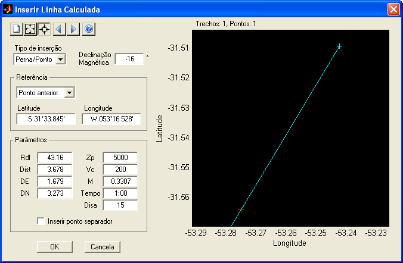
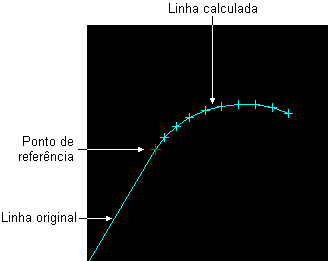
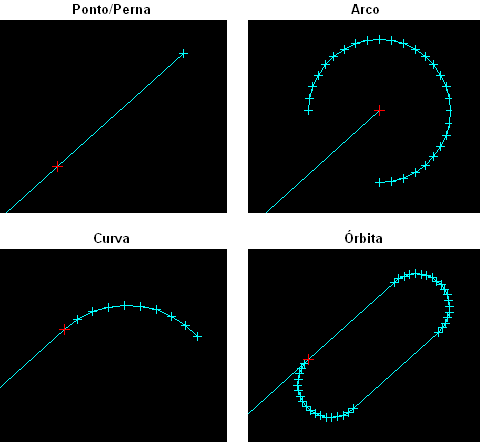

| Menu
Ferramentas - Reprodução do
Voo - Editor de Cenários |
|
Essa ferramenta permite inserir uma linha ou série de pontos calculados a um objeto auxiliar ou área de voo do Editor de Cenário. A ferramenta pode calcular automaticamente um ponto/perna, um arco, uma curva ou uma órbita baseado em um ponto de referência e em parâmetros geométricos (como distâncias, radial, variação de proa) ou de voo (como velocidade, altitude, inclinação, tempo).
É possível
inserir vários trechos sequencialmente para montar uma linha tão
extensa quanto necessário.
Para
acessar a ferramenta, selecione um objeto auxiliar (exceto texto) ou
uma área de voo e clique no botão  do
Editor de Cenário.
do
Editor de Cenário.

Descrição
e Operação
A janela da
ferramenta de inserção de linha calculada possui as seguintes áreas:
Barra
de
Ferramentas
A Barra de
Ferramentas possui botões que permitem o controle
do zoom e dos trechos a serem inseridos.
Para recomeçar
a inserção de trechos, clique
no botão  e
confirme.
e
confirme.
Para ajustar o zoom da área de apresentação gráfica de forma a exibir apenas os trechos novos, clique no botão
 e confirme.
e confirme.
Área
de
Apresentação Gráfica
Essa área apresenta uma visualização gráfica da linha original, do ponto de referência e da nova linha calculada.
A projeção cartográfica é do tipo equi-arco, com arcos proporcionais nos dois eixos.

Os seguintes elementos são apresentados:
- A linha original é mostrada na cor original, sem marcadores.
- O ponto de referência é mostrado como uma cruz vermelha.
- A linha calculada é mostrada na cor original, com cruzes nos vértices calculados.
No canto superior esquerdo são apresentados o número de trechos e o número total de pontos a serem inseridos.
A posição do cursor do mouse (latitude e longitude) é apresentada no canto inferior direito da janela quando o mesmo estiver posicionado sobre a área de apresentação gráfica.A declinação magnética da posição do cursor, calculada para a data atual segundo o modelo magnético terrestre fornecido pela NOAA ("National Oceanic and Atmosferic Administration"), é apresentada no canto superior direito da janela (apenas para a região da América do Sul).
Área
de
Controle de Objetos
Essa área é composta pelo campo de seleção do tipo de linha calculada, do campo de apresentação da declinação magnética local (definida no Editor de Cenário), do campo de seleção do ponto de referência e dos campos para inserção dos parâmetros da linha calculada.
Tipo de inserção
Esse campo permite indicar o tipo de linha calculada desejada. As opções são apresentadas a seguir:

Ponto de
referência
Nesse campo deve ser indicado o ponto de referência para cálculo da nova linha. Há três formas de indicar o ponto de referência:
- Inserindo a latitude e longitude diretamente nos respectivos campos, em qualquer formato de coordenadas reconhecido pelo R_DAT;
- Selecionando a opção "Ponto anterior", para utilizar o último ponto válido imediatamente anterior ao trecho atual; ou
- Selecionando um dos waypoints ou auxílios cadastrados no cenário.
Nos dois últimos casos, os campos "Latitude" e "Longitude" são preenchidos automaticamente.
|
Tipo |
Parâmetro |
Descrição |
Unidade |
| Ponto/Perna | Rdl |
Radial |
graus mag. |
| Dist |
Distância |
NM | |
| DE |
Distância Leste | NM | |
| DN |
Distância Norte |
NM | |
| Zp |
Altitude pressão |
ft | |
| Vc |
Velocidade
calibrada |
kt | |
| M |
Número de Mach |
- | |
| Tempo |
Duração da perna |
min:s | |
| Disa |
Variação da
temperatura ISA |
°C | |
| Arco | Rdl 1 |
Radial inicial |
graus mag. |
| Rdl 2 |
Radial final |
graus mag. | |
| Raio |
Raio do arco |
NM | |
| Passo |
|
graus | |
| Curva | Psi 0 |
Proa inicial |
graus mag. |
| D psi |
Variação de proa |
±graus | |
| Passo |
Discretização
de proa |
graus | |
| Raio |
Raio da curva |
NM | |
| Zp |
Altitude pressão |
ft | |
| Vc |
Velocidade
calibrada |
kt | |
| M |
Número de Mach |
- | |
| Phi |
Rdl |
±graus | |
| Disa |
Variação
da temperatura ISA |
°C | |
| Órbita | Psi 0 |
Proa inicial |
graus mag. |
| Dist |
Distância da
perna |
NM | |
| Tempo |
Tempo da perna |
min:s | |
| Passo |
Discretização de proa | graus | |
| Raio |
Raio da curva |
NM | |
| Zp |
Altitude pressão |
ft | |
| Vc |
Velocidade
calibrada |
kt | |
| M |
Número de Mach |
- | |
| Phi |
Inclinação
lateral |
±graus | |
| Disa |
Variação
da temperatura ISA |
°C |
Obs.:
- Todos os parâmetros são inicializados com um valor default.
- No caso de curva ou órbita com referência no ponto anterior, o valor default da proa inicial será o da última perna válida.
- O lado da curva ou órbita é indicado pelo sinal dos parâmetros "Variação de proa" e/ou "Inclinação lateral".
A opção "Inserir ponto separador" insere uma linha de "NaN" entre o trecho atual e o anterior, de forma a separar as linhas.
Sair
Para fechar a
janela e inserir a nova linha ao objeto auxiliar ou área de
voo, clique no botão “OK”.
Para fechar a
janela sem inserir a nova
linha,
clique no botão “Cancela”.
| |
Editor
de cenários |
|
|